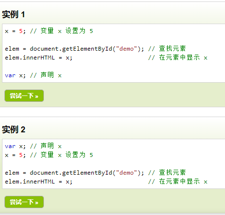

JavaScript 小结
某人在非常粗略而快速的情况下看完的JavaScript而做出的总结
首先自然是得先介绍介绍这门语言。
HTML、CSS、JS(JavaScript简称JS)一起构成了网页。最简单的描述就是，HTML定义了网页的内容，CSS给网页穿上了好看的衣服，JS则使网页动了起来。
简而言之，JS定义了网页的行为。它能对网页的事件做出响应，也能对页面进行操作，包括字符，甚至包括cookie。
这个blog的定义可是笔记本，想好好从头到尾学一遍的就好好去看教程。
JS菜鸟教程
那我便来讲述一下我觉得上述教程中较为重要的几个地方。
JS的基础的语法，数据类型，都和一些基础的语言没什么区别，所以没什么好说的，想学基础推荐入手Python或者C，Javascript并不适合作为第一个入手的编程语言，虽然它很简单，但是是相对于有一定的编程基础的人而言，若是没有任何的变成基础，想要理解事件、作用域
字符串、循环等概念还是有一定的困难的。
接下来是JS中非常非常零散的知识点。
变量提升
JavaScript 中，函数以及变量的声明都将被提升到函数的最顶部，及变量可以在使用后声明。

上图中可以看到，这两种定义方法是一样的。虽然说脚本语言是逐行翻译，但是浏览器的解释器会把函数声明和变量声明提升到方法顶部，不过先使用后定义可不是一个好习惯。
函数提升
这两个东西很像，一起说了吧。函数提升，意味着函数可以在声明前调用，如同变量提升一般。
"=="与"==="的区别
"=="代表的是值相等，"==="代表的是值、数据类型都相等。
如，我们说int a = 3； char b = "3"这两个a的值都为3。那我们可以说a==b,但是不能说a===b唯有a，b同属一个数据类型的时候，才能说a===b。
顺带就把undefined 和 null 的区别说了吧。
undefined是一个没有设置值的变量，当你定义的变量没有值是你typeof一下就会返回undefinde，且任何变量都可以通过设置值为undefined来清空
null呢，null则代表没有这个变量。
举个栗子： null===undefined --false 但 null == undefined --true
当我们使用一个较大的对象要为其释放内存的时候我们可以将其设置为null。
this 关键字this在js中还挺重要的，出现频率还挺高。
简要说明一下什么是this吧。
this 指向函数执行时的当前对象。如在方法中，this指向方法所属的对象，this最需要注意的是不同情况下它的指向。
对象方法中，this指向调用它所在方法的对象。
单独使用this，它指向全局对象window
函数(function)中使用this，也指向全局对象window
但是如果函数定义了严格模式，或者全局中定义了严格模式，那么函数中如果没有构造对象，那么this谁都不指如果使用，会返回undefined。
事件句柄中，this指向接受事件的HTML元素。
构造器
构造器是关于对象的构造，我们要初始化一个对象，构造器则对这个对象进行初始化，初始化完成之后，才可以创建对象。
构造语法如： InstanceObject IO = new InstanceObject();
对象的方法，则是构造器中的一个函数。，我们可以通过构造器定义对象的属性和方法，然后来实现响应的功能。
自调用函数
这意味着脚本函数可以自己悄咪咪的执行，不需要通过用户的同意，完全可以在用户不知情的情况下窃取资料。
实现也十分简单，表达式后面紧跟(),即可。

闭包
闭包是一种保护私有变量的机制，在函数执行时形成私有的作用域，保护里边的私有变量不受外界干扰。也有人说：可能开发者在开发的时候也没想到使用者会这么写，闭包就是个bug，闭包利用的是一个变量退出作用域时，按时没有被销毁，值还在。这时如果后面有变量命名和上一变量一样时，那这个变量则会继承上一个变量的值。数据会被重新利用，原谅我现在也不太看的懂闭包的实现，但是原理差不多懂了，不太推荐使用闭包，闭包的机制有一定的局限性，想要使用全局计数器，正常的做法是定义一个全局对象，这个对象定义自己的属性和方法add，用的时候直接对象.add
下图附上让我很迷茫的闭包实现代码

函数嵌套
关于js函数最后再来介绍一下函数的内嵌函数。关于内嵌函数我觉得需要注意的就是函数作用域的访问。
在JS中，所有的函数都能访问上一层的作用域。，即嵌套函数能访问上一层的作用域。（有待验证，刚刚测试了下，好像外层和内层作用域并不互通。）再次验证回来了，上次好像是在函数内调用，而没有一个输出，所以导致看起来好像并不互通。

异步编程
异步与同步相对，同步是指步骤在一个控制流中按顺序执行，而异步的概念则是将不再与原有的序列有顺序关系。显然，异步的效率更高。

什么时候应该使用异步编程？
我们用子线程来完成一些可能消耗时间足够长，或者说可能会影响主线程进程的操作。因为子线程独立于主线程，子线程即使崩溃也不会影响主线程的运行。
那现在来到第二个问题了，子线程是被主线程发射出去的，可以说子线程一旦发射以后我们就无法与主线程同步，主线程也无法确定它的结束，那我们如何解决子线程与主线程的通信问题？子线程的意义是在于为主线程解决问题。
这个时候，我们就来到了回调函数。
回调函数就是用于解决子线程一去不返的问题的，我最开始理解的回调函数是子线程对主线程某一变量的引用，然而我现在回过头来翻查资料后才发现，回调是一个通过函数指针来调用的函数。回调是一种方法，这意味着子线程中并不是只有回调函数这一个函数，在此之前我对回调函数有所误解。
一个多小时过去了，我又回来了，以上的全部都是废话，现在我重新介绍一下回调函数，简单的描述下知乎大佬对回调函数的理解。
最开始，先不扯回调。扯编程。
编程分为系统编程和应用编程两大类，系统编程主要是用于写一些被调用的库文件，而应用编程就当然是写应用程序了。我们的应用程序可以通过API调用系统编程所写的库来完成各种操作。
有时候，为了更好的完成任务，库函数需要应用程序传递一个函数给它，而这个 函数就称为回调函数，这个行为被称为登记回调函数。

回调函数是一个高层调用底层，而底层再回过头来调用高层的过程。
整个回调需要三方来完成：主函数、中间函数、回调函数。回调中，主函数通过某种方式，将回调函数像参数一样传入中间函数，中间函数在调用回调函数。
那这又与异步编程有什么关系呢？
异步编程中的主线程就是那个起始函数，也就是主函数。主函数发射一个子线程，子线程就是中间函数，子线程运行完成它的任务后，通过调用回调函数来与主函数取得联系，这就完成了异步编程的实现。
了解了异步编程之后，在来了解一下如何实现异步编程。
这里我们需要了解一个在ECMAScript6中新增的一个类——Promise
这个类主要的作用就是发射异步函数(我觉得)
Promise 类有 then()\catch()\finally()三个方法，这三个方法的参数都和promise一样，都是一个函数。
Promise(function (resolve,reject)) Promise中的函数会立马被异步执行。 resolve和reject都是函数，调用resolve代表一切正常，reject是出现异常时所调用的。
then() 将参数中的函数添加到当前Promise的正常执行列表
catch() 是Promise的异常处理序列，有任何问题都会掉到catch函数
finally() 是在Promise执行完成后一定会执行的序列
Js 菜鸟教程
知乎大佬教程
非常抱歉现在还没有完全理解回调以及异步的实现，然而这可能需要等到某次具体的问题才能弄懂了，在此奉上两个大佬的链接，希望各位看官能够看懂，能来教教我就再好不过了。
JSON
JSON 全称为JavaScript Object Notation，通常用于JavaScript的存储和传输数据。而它的语法也很简单。
"name":"value" 数据为键/值对应。
{"name":"value","name_2":"value_2"} 对象又大括号括起。
"site":[{对象1}，{对象2}，{对象3}] 数组由中括号括起，数组中可以包含多个对象。
JSON文件类型是一个字符串，而JSON字符串和JavaScript对象可以使用函数相互转换。
以上则是JSON的全部内容，十分简单明了。
JS对象
Js中，所有的事物都是对象，对象是特殊的数据，对象拥有属性和方法。
以上则是对象的介绍。
Js中所有的对象都是Object类型的实列，都会从Object.prototype继承属性和方法。
我们可以通过使用prototype属性给对象的构造函数添加新的属性。

浏览对象模型BOM
BOM其实就是介绍window对象。它表示浏览器窗口。
window对象挺重要，重要到什么程度呢？所有的全局对象、函数、变量均成为window对象成员，全局变量是window对象的属性，全局函数是window对象的方法。
window对象下附带这一些很有意思的方法，我这里就挑几个我觉得好玩的讲讲。
window.location.assign() 加载URL指定的HTML页面。相当于链接，可返回。
window.location.replace() 加载URL指定的HTML页面，替换当前窗口，不可返回。
window.history.back() -1
window.history.forward() 1
window.history.go(-+1;0) 0刷新页面。
简要介绍一下上三条，back是返回上一页面，forward返回下一页面，go(-1)=back;go(1)=forward go(0)刷新
Navigator对象
用于访问浏览器信息
但是很遗憾，这个玩意是不可信的。它具有一定的误导性，不应该用于浏览器版本的检测。
因为navigator的数据可以被轻易更改，且也无法报告新的操作系统。
JS弹窗
window.alert() 警告框
window.confirm() 确认框
window.prompt() 提示框
JS计时事件---
一个设定时间间隔来执行的代码。
setInterval() --每隔**执行一次
setTimeout --隔**执行一次
clearInterval() --停止执行